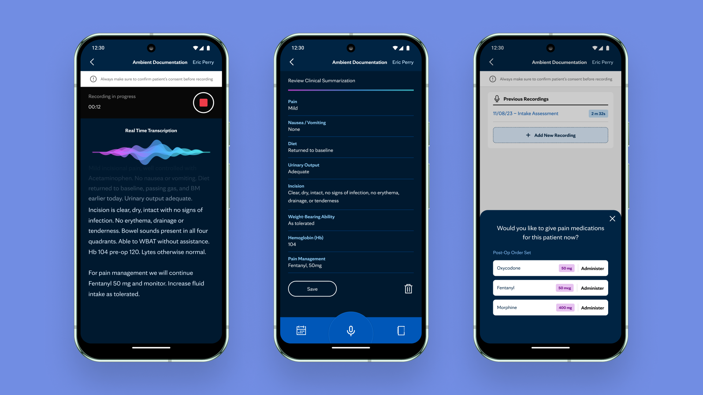
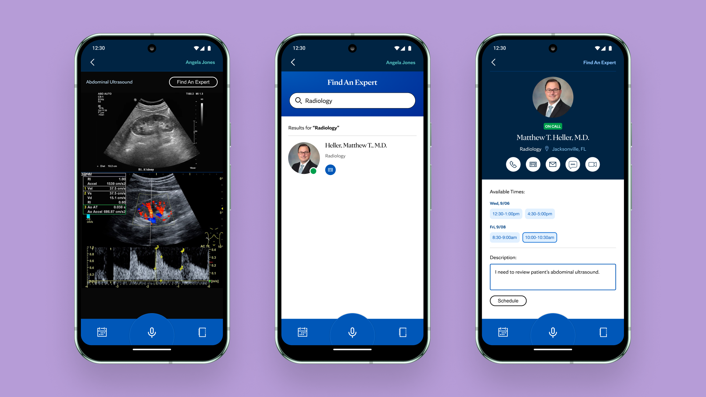
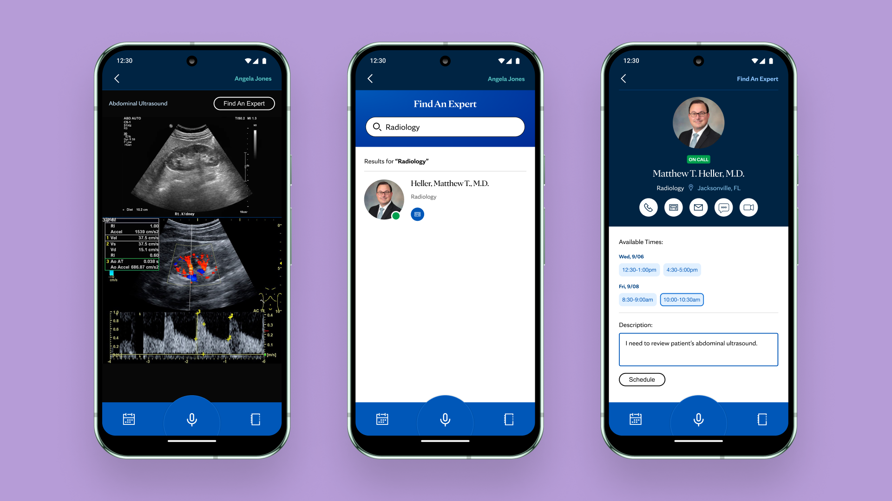

PACU Intake Use Case - (Nurse Persona)
This user flow outlines a simplified handoff process between pre-op and PACU nurses, improving coordination during patient transitions from surgery to post-operative care.
Consultation Use Case - (Specialist Persona)
The following illustrates the facilitation of care team specialists collaborating on an individual patient's treatment plan.
 
